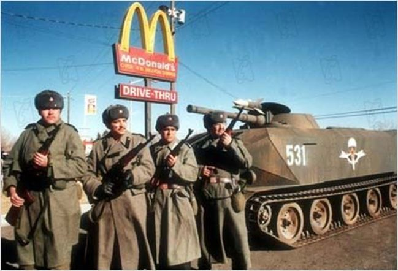
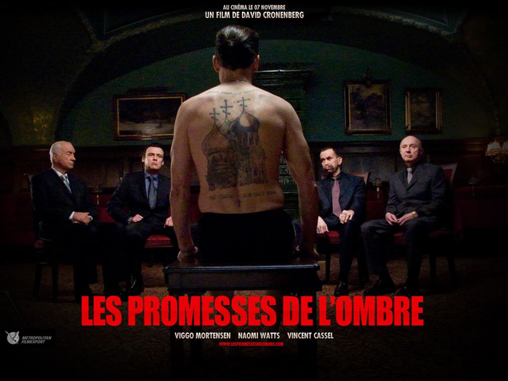
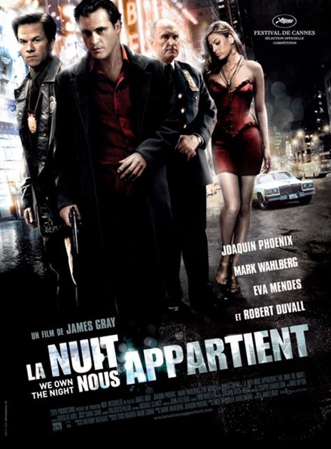

Je crois de plus en plus à une montée de la tension russo-américaine pour l’année prochaine, qui pourrait déboucher sur une catastrophe. C’est comme pour les produits dérivés ; on ne s’arrêtera pas en si bon chemin, et c’est Hollywood qui va nous éclairer à ce propos.
Dans les années 80, Hollywood envoyait Schwarzenegger égorger des latinos en Amérique centrale ou du sud (Commando,Predator, Collateral Damage) ; ou bien, quand on avait moins d’argent, on envoyait Chuck Norris. Dans les années 90, alors que l’on prépare l’opinion aux attentats du 11 septembre et aux guerres qui s’ensuivent, on ne cesse de montrer au public des films consacrés au terrorisme islamiste. Enfin, dans les années trente, pour remonter le cours du temps, les épisodes de Buck Rogers nous initiaient au péril jaune.
 Aube Rouge (1984)Chaque fois, des guerres ont bien eu lieu. En Asie bien sûr (Japon, Corée, Vietnam et tout le reste). En Amérique centrale, en Colombie (300 000 morts tout de même), au Moyen-Orient où elles ne cessent pas, et ne cesseront peut-être jamais. Et ce que nous voyons aujourd’hui, c’est que la pression anti-russe ne cesse de monter du côté de Los Angeles.
Dans les années 80, on avait eu Rambo 2 et 3, la délirante Aube rouge, qui voyait une invasion russo-cubaine des USA. L'invasion latino a bien eu lieu, mais sous forme de réfugiés économiques.
Il y a toujours eu pléthore de films anti-russes à Hollywood, et il est bon de noter que ces films anti-russes étaient rarement anticommunistes : sous Roosevelt le cinéma fut même pro-stalinien. Je me souviens d’une comédie, Jet Pilot, de Von Sternberg, narrant le mariage d’une belle pilote stalinienne avec John Wayne ! Sous Reagan aussi, Le Quatrième Protocole (1987), Double Détente (1988) ou Gorky Park (1983) ne marquaient pas, c’est le moins qu’on puisse dire, un anticommunisme viscéral. On peut rappeler aussi la Belle de Moscou qui voit Fred Astaire séduire Cyd Charisse avec son soft power. Et je ne cite pas Reds de Warren Beatty oscarisé en 1981 pour son catéchisme bolcheviste (c’est à croire que l’on attendait avec impatience la nationalisation de toutes les banques et de toutes les dettes !)
Les grands cinéastes anticommunistes comme Mervin Le Roy, l’immense McCarey ou même Kazan ont même été diabolisés ou sciemment oubliés depuis, à l’instar de Joe McCarthy. Les films hollywoodiens étaient plutôt anti-russes, et marquaient une haine anti-russe civilisationnelle, essentiellement tsariste et orthodoxe. L’Amérique comme l’Angleterre de Palmerston au XIXe siècle poursuivait la lutte de la périphérie océanique contre le pays-continent, que l’on symbolisait par le conflit de l’ours et de la baleine. L’Angleterre réussit à entraîner la France de Louis-Napoléon dans son irréelle guerre de Crimée (la charge de la brigade légère). Disraeli voulait une guerre contre la Russie en 1878, pour protéger l'empire ottoman, et l’obsession anglo-saxonne était d’empêcher la Russie d’avoir accès aux mers chaudes ou bien de se rapprocher des Indes (thématique McKinder). C’est une belle espionne russe qui aide Mohammed Khan à capturer les Trois lanciers du Bengale dans le film éponyme (par ailleurs œuvre préférée d’Adolf Hitler, qui s’y connaissait en racisme anti-russe). Kim avec Errol Flynn tacle aussi la Russie (elle envahit l'Inde!). Le Kipling sur l'homme qui voulut être roi est aussi anti-russe, mais pas la belle adaptation de John Huston. On pourra aussi citer Capitaine sans peur, de Raoul Walsh où un fougueux Gregory Peck se fait fouetter par un noble russe, dont il a séduit la fiancée... Encore un marin contre un terrien. Le film tourne autour de l'Alaska que le tzar Alexandre II vendit pour une bouchée de pain. Et dire qu'Alexandre aurait pu aider l'Angleterre et le France impériale à soutenir le Sud sécessionniste !
Mais c’est bien sur le comte Zaroff qui synthétise tous les préjugés anti-russes : c’est un russe blanc, un aristocrate ; il adore chasser ; il est cruel et entouré de moujiks sordides ; et il se lance dans des chasses sadiques après avoir coulé les navires des riches yachtmen qui croisent près de son île mélanésienne.
Les Chasses du comte Zaroff (1932)
Trente ans plus tard, Kubrick le russophile (voyez mon livre sur Kubrick aux édtions Dualpha) se moque un peu du racisme anti-russe dans son Docteur Folamour : pour le général xénophobe qui pousse le président à une guerre totale, les russes sont un « tas de moujiks ignorants ». Mais l’ambassadeur soviétique ne s’illustre pas par sa bonne conduite dans la War Room où il ne faut pas se battre... Dans 2001 les russes sont des savants trompés par une conspiration américaine !
Comme je l’ai dit déjà, il y eut une baisse de régime anti-russe sous le regretté Ronald Reagan... Et puis l’implosion du communisme, mauvais service rendu aux anglo-saxons (il a libéré les forces vives de la Chine, de la Russie et même de l’Inde), fait qu’en 1997 Simon Templar alias Le Saint va combattre un « oligarque ultranationaliste » qui risque de nous priver de pétrole et de liberté. A la même époque les oligarques apatrides enrichis sous l'ère Eltsine sont déjà tous à Londres ou à Megève... La même année Air Force One nous décrit l’assaut de l’avion présidentiel américain par un groupe de terroristes nationalistes. Le sulfureux Gary Oldman peut exposer son point de vue de méchant, d’ailleurs parfaitement justifié.

Les Chasses du comte Zaroff (1932)
Il faut attendre dix ans pour voir une nuée de films anti-russes déferler sur nos écrans : Les Promesses de l’Ombre, de Cronenberg, La Nuit nous appartient, X-Files de Chris Carter. La russophobie revient avec le regain russe, comme le dit Todd dans son Après l'Empire. A chaque fois, on n’y va pas de main morte : les Russes sont des cannibales, des racistes abrutis, des trafiquants de cocaïne, ou des mafieux pathétiques qui contrôlent tout ce qui se fait du mal dans le monde (Equalizer)... Pis encore, ils vont aussi à l’église et ont l’esprit de famille...
C’est eux, et non pas d’autres, qui organisent la nouvelle traite des blanches. On se croirait au temps du terrible Ivan Grozny !
Menacent-ils la sécurité des Etats-Unis, qui aujourd’hui peut être menacée n’importe où ? Oui, pour Charlie’s Wars, écrit par Aaron Sorkin et réalisé l’an dernier par Mike Nichols, qui montre comment les Etats-Unis ont équipé les talibans pour abattre les hélicoptères de l’armée rouge. S’agit-il d’une répétition ?
La russophobie en Amérique est ancienne. Et on demandera à Tocqueville de nous la justifier ; ce qu'il a d'ailleurs fait à la fin du tome premier de sa Démocratie :
« Il y a aujourd'hui sur la terre deux grands peuples qui, partis de points différents, semblent s'avancer vers le même but: ce sont les Russes et les Anglo-Américains. Tous deux ont grandi dans l'obscurité; et tandis que les regards des hommes étaient occupés ailleurs, ils se sont placés tout à coup au premier rang des nations, et le monde a appris presque en même temps leur naissance et leur grandeur. »

Partager cette page